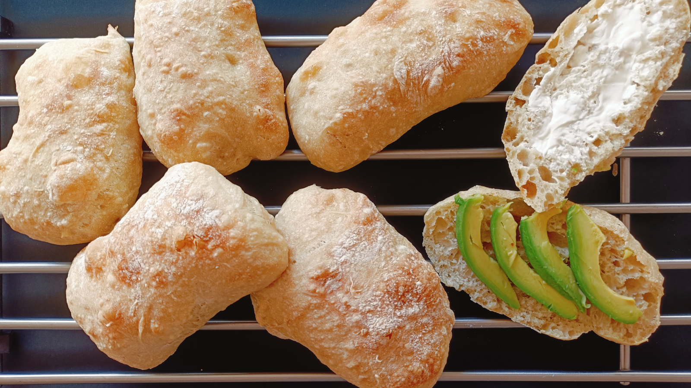

Ciabattas
- Preparación: 10 min
- Tiempo total de levado: 2 h
- Horneado: 25-30 min
- Porciones: 6-8 ciabattas
INGREDIENTES
- 4 tazas (500 g) de harina de trigo para pan o de todo uso
- 2 tazas (450 g) de agua a temperatura ambiente
- 1½ cucharaditas (7 g) de levadura seca
- ½ cucharada (10 g) de sal
- 2 cucharaditas (10 g) de aceite de olivo
DESCRIPCIÓN
Las ciabattas son panes tan fáciles de elaborar como versátiles. Se hacen con solamente 5 ingredientes que siempre tenemos a mano y no requieren amasado, por lo que es realmente sencilla la elaboración. El tiempo total de levado es un poco largo, pero no se requiere tener las manos ocupadas, por lo que aconsejo mucho comenzarlas a trabajar mientras se realizan otras labores en casa. Quedan perfectas para hacer sándwiches o para desayunar con mantequilla y mermelada.
INSTRUCCIONES
- En un recipiente profundo mezclar la harina, levadura y sal. Luego agregar el agua y aceite y mezclar con una cuchara de madera hasta obtener una masa bastante pegajosa.
- Cubrir el recipiente con plástico y dejarlo reposando a temperatura ambiente 30 minutos.
- Envolver la masa desde los bordes hacia adentro con las manos húmedas, como doblando un sobre. Cubrir nuevamente con plástico y la dejar levar 20 minutos
- Repetir el mismo proceso de estirar y doblar. Dejar reposar tapada otros 20 minutos.
- Repetir el proceso pero esta vez terminar volteando la costura hacia abajo. Dejar reposar 1 hora o hasta que doble su volumen. Cuando haya levado, espolvorear con harina la superficie de la masa.
- Enharinar una superficie de trabajo bien limpia y volcar la masa. Esta se expanderá sola en la superficie .
- Dar forma cuadrada en la medida de lo posible y cortarla en 6 u 8 partes con la ayuda de una espátula bien enharinada. Esta parte es la mas compleja, pues la masa es muy pegajosa y no es buena idea tratar de amasarla.
- Transferir cuidadosamente las ciabattas a una bandeja de horno cubierta con papel para hornear. Dejar reposar cubiertas con plástico o con un trapo bien limpio mientras se precalienta el horno a 220 °C (430 °F).
- Hornear 25 - 30 minutos o hasta que la corteza de las ciabattas se torne dorada. Dejar enfriar totalmente sobre una rejilla antes de servir.